VÉRTICE / UNIVERSO DA MARCAUma essência.
Uma essência.
Infinitas expressões.
Elegância que valoriza quem você é. A identidade da Vértice ganha forma em cada encontro, cada detalhe e cada ponto de contato.
Explore a coleção ↓
01 / VINHO VÉRTICE#692234
MODA QUE EXPRESSA.
IDENTIDADE QUE CONECTA.V
IDENTIDADE QUE CONECTA.V
A COLEÇÃO
Sua marca, em cada detalhe.
Arquivos organizados para criar, compartilhar e manter a essência da Vértice presente.
23 entregáveis


Marca / 02
Logotipo · claro
Versão clara com fundo transparente, para superfícies escuras.


Redes sociais / 04
Post institucional
Arte original para feed • 1080 × 1080 px.


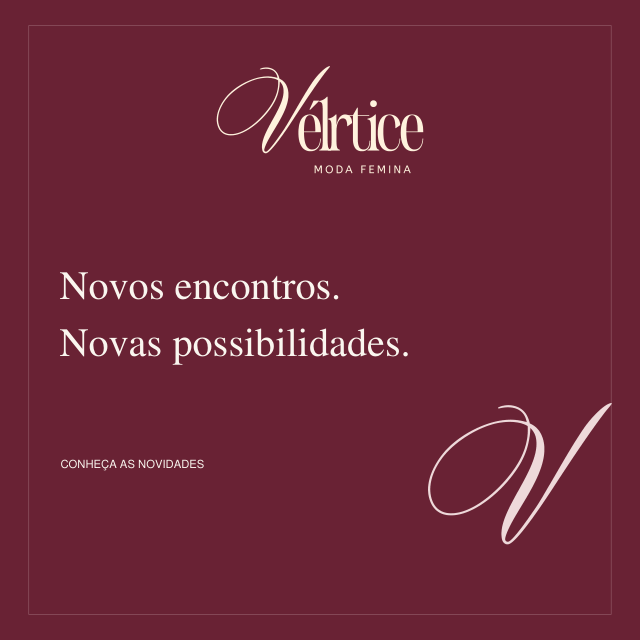


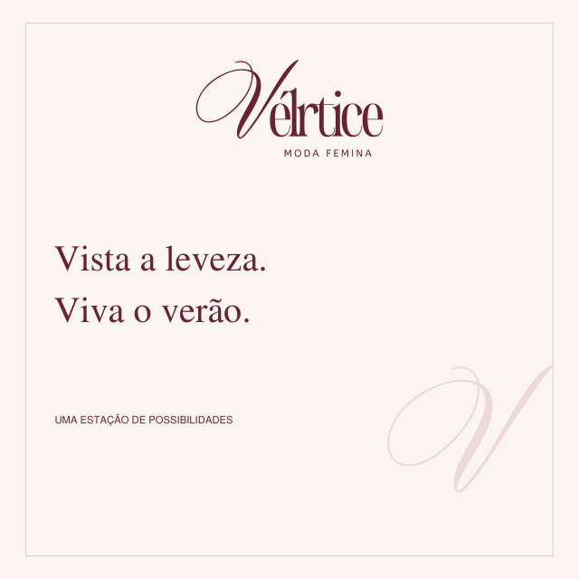


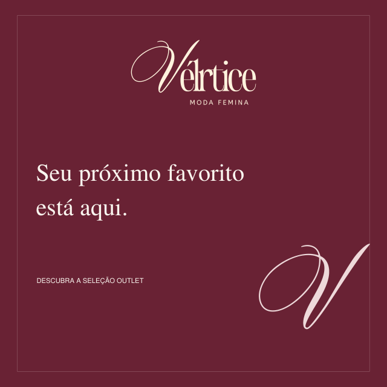


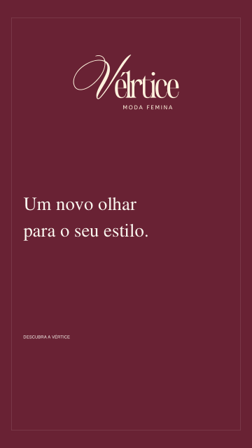
Redes sociais / 09
Story · novidades
Arte vertical • 1080 × 1920 px; conteúdo centralizado para stories.


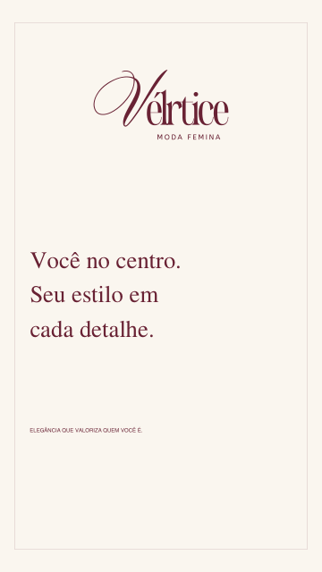
Redes sociais / 10
Story institucional
Arte vertical • 1080 × 1920 px; conteúdo centralizado para stories.


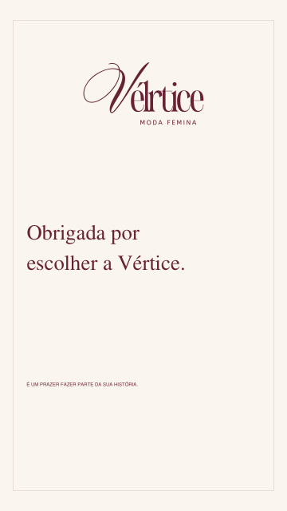
Redes sociais / 11
Story · agradecimento
Arte vertical • 1080 × 1920 px; conteúdo centralizado para stories.


Redes sociais / 12
Destaque · Novidades
Capa de destaque com área central segura para recorte circular.


Redes sociais / 13
Destaque · Coleções
Capa de destaque com área central segura para recorte circular.


Redes sociais / 14
Destaque · Looks
Capa de destaque com área central segura para recorte circular.


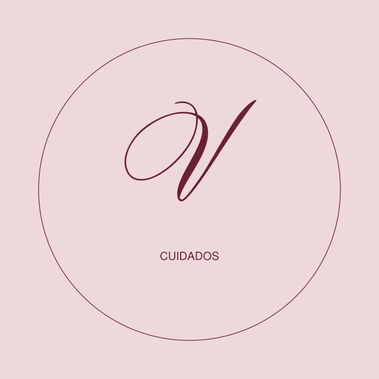
Redes sociais / 15
Destaque · Cuidados
Capa de destaque com área central segura para recorte circular.


Redes sociais / 16
Destaque · Sobre
Capa de destaque com área central segura para recorte circular.


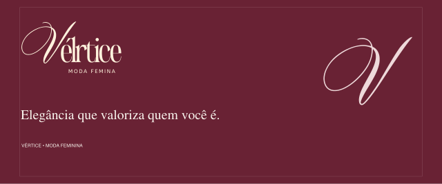
Digital / 17
Banner para site
Banner editorial para uso digital, sem ofertas ou dados fictícios.


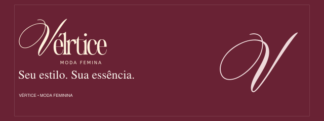
Digital / 18
Banner de campanha
Banner editorial para uso digital, sem ofertas ou dados fictícios.


Papelaria / 19
Cartão · frente
Frente institucional • 90 × 50 mm; sem sangria.


Papelaria / 20
Cartão · verso
Verso institucional • 90 × 50 mm; sem contatos inventados e sem sangria.

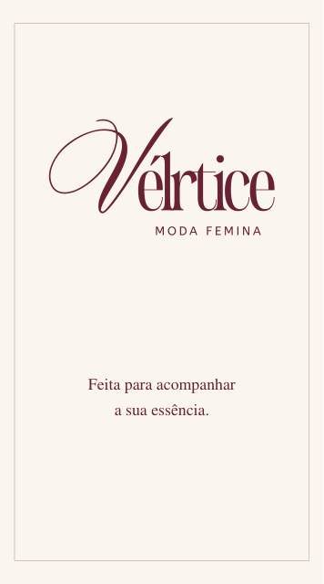
Papelaria / 21
Tag de produto
Arte de tag • 50 × 90 mm; posicionamento do furo a definir com a gráfica.


Embalagem / 22
Adesivo circular
Arte para adesivo circular de 60 mm; corte indicado pela borda externa.


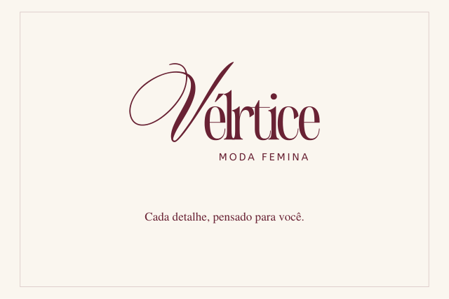
Embalagem / 23
Arte institucional para embalagem
Painel de marca • 240 × 160 mm. Aplicar na faca fornecida pelo fabricante.


O PONTO DE PARTIDA / 26 PÁGINASA essência,
A essência,
documentada.
O manual original reúne os fundamentos, a paleta, a tipografia e as referências de aplicação da identidade Vértice.
Baixar manual em PDF ↓Leve o universo Vértice com você.
As 23 peças nos três formatos, o manual original e as orientações de uso.
Baixar kit completo · ZIP ↓Formatos e orientações de produção
SVG para edição, PNG para uso digital e PDF para compartilhamento. Os textos novos usam Georgia e Arial como fontes de apoio; o logotipo original foi preservado em curvas. O manual especifica Citadel Script e Wichittra, cujos arquivos completos não acompanham este kit.
PDFs de papelaria em tamanho final, RGB e sem sangria. Antes da impressão, valide sangria, corte, perfil de cor e material com a gráfica. A embalagem é uma arte de aplicação, sem faca estrutural.
Baixar orientações completas ↓